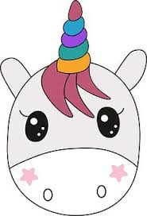

Un div parinte (chenarul negru) va contine doua divuri interioare, unul in stanga si unul in dreapta. Cele doua div-uri interioare au fiecare latimea fixa de 200 de pixeli. Div-ul interior din stanga contine
